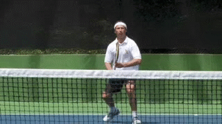
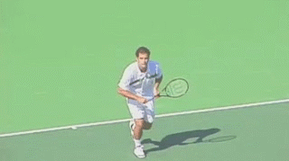
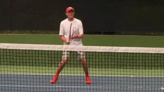
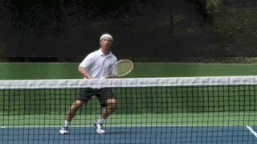
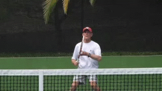
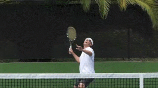
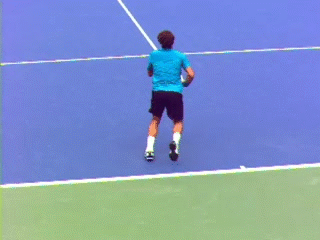
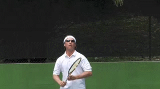
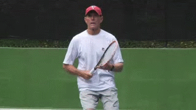

Serve and Volley: Three Critical Shots¶
Kyle LaCroix

The half volley, the overhead, and the swinging volley: all part of a complete serve and volley game.
In the last article (Click Here) we looked at the fundamental patterns of serve placements combined with volley placements. But not every serve you hit will produce a shoulder high first volley that you can direct to the opening of your choice.
There are three other critical shots you must master to become a complete serve and volley player. These are: the half volley and the overhead. And in the modern game, even at the club level, the swinging volley.
Serve volley players must have confidence in their ability to deal with half volleys that bounce at the feet. They also must have absolute confidence in the overhead, both the ability to use it to finish points but also to maintain advantage on more difficult balls.
It's also important to have the ability to hit swinging volleys. In a game that is played with modern rackets and strings, even well-placed approaches and crisp volleys to the open court sometimes aren't enough to win points against players with great passing shots or determined lobbers.
The swinging volley gives players a way to create more velocity and pressure. A swinging volley can often be hit for a winner when a classic volley cannot, and this is especially true when the ball is soft and high, as it frequently is in club tennis.

Pete Sampras: flawless, languid half volleys.
So, let's see how to use these shots to stay ahead when you are attacking and create more winning serve and volley points.
The Half-Volley
Having watched Pete Sampras for the majority of his career, it appeared to me that he almost asked to hit half volleys. It was amazing how Sampras appeared so languid in hitting flawless midcourt balls on the rise.
But it's safe to say that few if any players (and probably Pete included) would claim the half-volley is their favorite shot. It's not really a shot you hit by choice.
Your goal as a serve and volley player is to reach the ball before it bounces. Sometimes this can't be achieved. Then your goal becomes to hit a half volley to stay ahead in the point, pressure the opponent to hit a winner and set up the opportunity to finish.
Timing and composure are everything. You must balance with a split step, but continue to move forward. Since the contact point is low, you must lower yourself to the ball.
Similar to taking a ball early on the baseline, a half-volley requires clean contact. Unlike the groundstrokes where there is margin for error, you absolutely must find the center of the strings.

I teach my players to attack the tape on the half volley.
From the tactical point of view, I feel the key is to keep the ball low over the net. I ask players to "attack the tape."
Attacking the tape means to hit this volley firmly and low over the net. Many players will compensate for the low ball height by aiming too high over the net, sailing the ball too high and directly into the opponent's strike zone.
If my students can aim for and attack the tape, they can stay ahead in the point and be in position to finish on the next ball.
There is some debate on where to hit the half volley. Some coaches say crosscourt for clearance over the lower part of the net, some say down the line so you stay in front of the ball and can cover the next shot more easily. (For more on the fundamental geometry of net play, see Allen Fox's classic article. Click Here.)
I'm not dogmatic about location of the half volley. Due to the difficulty of this shot, I think successful execution is more important than placement.
No matter which way you go, your opponent will have to hit at least one more shot. Pushing the half volley deep in the court can open the court for a soft dink or drop shot. Hitting short and low will make your opponent scramble and hit it up, which can lead to an easy put away.

For many players hitting the half volley with a little underspin is the best way to stay in control.
Normally the half volley (especially at the pro level) is hit flat or with a small amount of topspin. But underspin is also a viable option.
A half volley hit with slice may have slightly less pace, but it may be easier for some players to get the ball up and over the net. The slice variation also has the advantage of staying lower after it bounces, which can increase the difficulty of the passing shot.
Regardless of direction or type of swing or spin, keeping the eyes locked on the ball and tracking it all the way into the sweet spot of the racquet is paramount to clean contact. The bottom line is the most important thing about the half volley is simply making the shot a high percentage of the time.
The Overhead
No serve and volley game is complete without the overhead. It is the exclamation point and unequivocal evidence of an effective serve and volley point, or any attacking point for that matter.
Forcing your opponent to throw up a lob is a compliment to you and the fact that you left them no alternative than to send the ball up into the sky hoping for a little luck. But at the recreational level, fear washes over many players when the ball goes up.

Ideally, the overhead wins the point outright.
The overhead should be a gimme. It's the tennis equivalent of a 3 foot putt in golf or a wide open lay-up in basketball. Yet just knowing you should make the overhead often creates pressure that leads to errors.
To avoid this, you must do the fundamental work to develop confidence. This allows you to stay relaxed. You want to be happy when your opponent is forced to lob, not frightened. (There are two great articles on developing these fundamentals on Tennisplayer. Click Here for the first one by Scott Murphy. Click Here for the second from Kerry Mitchell.)
Location and placement can be variable, depending on where the opponent is, whether he is moving, and where on the court you strike the ball. But the goal is to develop the ability to angle the overhead so that it intersects and crosses the sideline going either way. It's all part of pulling my opponent off the court and keeping them off balance.
Hit the last volley to opponents backhand? Hit that overhead to their forehand. Or vice versa.
But thinking in depth about tactical options can be dangerous. Far too many players have this type of conversation with themselves:
"My opponent is standing in the middle of the court, maybe I should hit it to his forehand because he may guess I'm going to his weaker backhand.
"But wait, maybe he knows what I'm thinking, so I will hit to the backhand."
"But wait maybe he will move in one direction or the other, so I'll hit it to the middle."
If you really have confidence in your ability to hit the ball across the sideline in both directions, the very worst case is you hit another overhead with your opponent even further out of position.

When in doubt, direct the overhead back to the opponent's backhand.
But when you may not feel this confidence on a given ball, I recommend hitting the ball inside out to the opponent's backhand. Not only are you hitting to the weaker side, you have more court to work with hitting on a diagonal.
The Swinging Volley

The swinging volley: an increasingly important weapon at all levels.
As traditional as some coaches remain, there is no denying the prevalence of the swinging volley. Going back to the impetus of my tennis journey, the 1990 Wimbledon Gentleman's singles final, I do not remember one instance during that match where a swinging volley was struck. (Click Here for my first article on what inspired me to develop the serve and volley style.)
Now have times changed. The swinging volley shot has become more and more pronounced in both the men's and women's game. As the speed and power of the game at all levels have increased, due to technology and physicality of the players, so have the opportunities for floating balls.
Great coaches have an uncanny ability to foresee the future and mold their players accordingly, Nick Bollettieri was correct when he began teaching his players the swinging volley back in the 80's. Having firsthand experience competing against many students from his academy in the 90's, I can tell you this was a game changer.
No longer did my neutralizing chip returns work. Goodbye to the days of floating service returns to begin the point.
The swinging volley is effective when your opponent’s ball has little pace and remains high. It produces more pace than a regular volley and reduced the chance of a ball being returned with interest. I believe it's the one shot that can differentiate great players from the rest of the pack.

The swinging volley can be a weapon on either side.
At the pro level more swinging volleys could eventually help create a return to attacking tennis. Maybe we'll even see the emergence of a new style: not serve and volley, but serve and swinging volley.
But in my view, it's not only a pro level shot. At the club level, the swinging volley can be the difference maker as well. Most commonly it's hit on the forehand side, but it's equally viable on the two-handed backhand. Some players can hit it on the one-hander as well. (For Scott Murphy's article on swinging volley technique, Click Here.)
One of the problems attacking the net in club tennis is that everything is slower. This is particularly true when playing a pusher.
You may get a short slow ball, stroke a perfect approach, hit a volley into the open court--and then lose the point on a lob. It's difficult to hit winners when the pace is slowed so much.
How to pressure the pusher? The swinging volley can be the answer.
The technique is virtually identical to a topspin groundstroke. When the ball is slow, you have ample time to take this fuller groundstroke like swing.

At the club level a swinging volley can make the difference against pushers.
You generate more pace than on a classic volley which is more dependent for its velocity on the incoming ball. By swinging and generating topspin you can often create enough additional pressure to hit winners, force errors, and/or prevent the pusher from controlling the lob.
The swinging volley can be hit according to the same general geometric guidelines we saw in our last article. (Click Here.) But because of the increased pace it can also be hit more aggressively into the open court, and into smaller openings.
So, there we have it for the additional shots that complete the range of serve and volley shot making. Stay tuned for a series of awesome drills I use with my players to develop all aspects of the serve and volley game.
Kyle LaCroix is a USPTA and PTR Certified Professional as well as receiving his United States Center For Coaching Excellence (USCCE) Certification. He has been a featured speaking at numerous Industry Conferences.
Kyle has experience working with ATP/WTA and NCAA collegiate players at each level of their competitive careers and at every stage of their professional and personal development. He is recognized throughout the industry as a reliable, hardworking, genuine presence. Kyle utilizes great people skills and is an exceptional communicator. He understands the important roles and responsibilities that federations, coaches and players carry with them on a daily basis.
He holds an MBA from the University of Michigan and a M.Ed in Educational Leadership from Stanford University